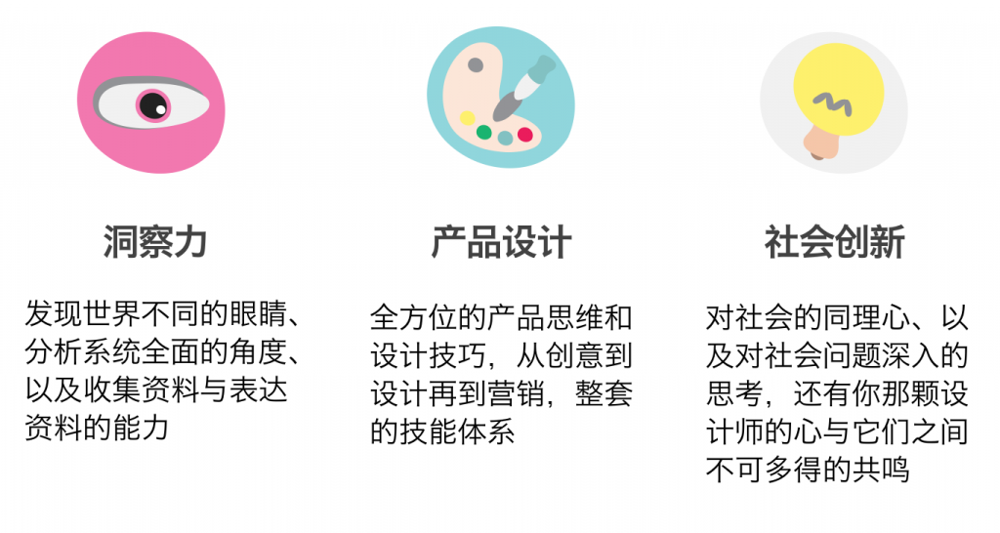
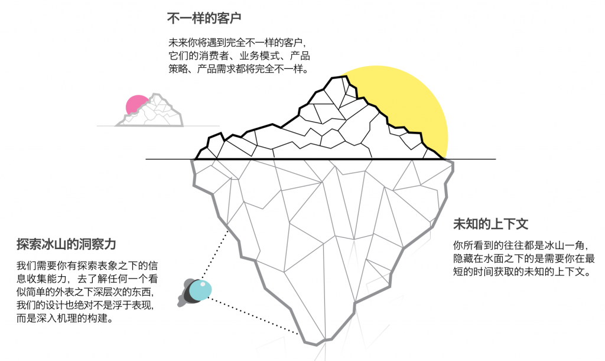
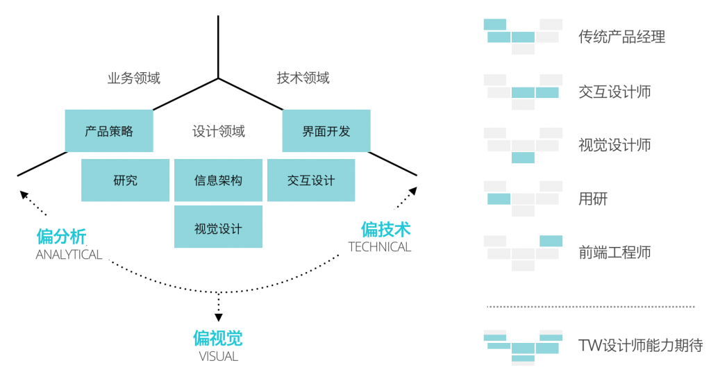
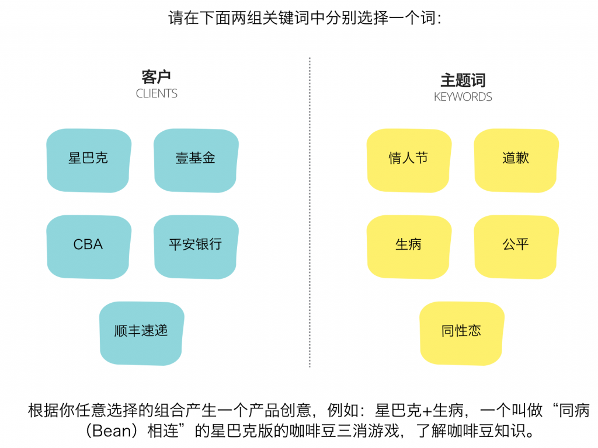

我一直庆幸这个兴盛的市场给我们带来的机会，过去的两年里，我们完成了从无到有的变化，我们的设计团队正在成为牵引ThoughtWorks中国业务的重要力量，并悄无声息地改变着这个组织的行为模式。
而对于未来的判断，我们依然相信有更多有趣的事情即将发生，ThoughtWorks中国也将迎来8年来最好的时代，而让一切成为可能的，一定是更大规模，所以我们不能停止招募新人。
我相信一个人选择不离开组织的原因是因为组织内有留恋的人，因此建设团队的核心是建立亲近关系，这也是一直以来我们采用推荐制进行招聘的原因，也从来不使用职位描述（JD），我们希望，每一个加入的人，都是因为一份可能的亲近关系，而不是某个被条条框框限制住的职位描述。
我们会使用一个作业作为一切的基础，我们重视这份作业，我们迫切的希望作业中有我们独特的语言，让你从一开始就愿意亲近。去年大部分时候，我们都采取作业后发制，先由HR电话面试，再发送作业，今年我想把这份独特的ThoughtWorks设计作业公开出来，让所有人都能听到我们的设计语言，接受所有人任何时候的面试请求。
新的作业将包含一些新的东西：
采用了新的三选一模式，可以选择其中的任何一个题目完成，当然我们不反对有人全部完成； - 解释了我们为什么要考察这方面的能力； - 提出了我们在某些设计上的思考； - 我们希望这份作业也可以成为一份学习的资料，去理解设计中某些被忽略的含义。
我们所提到的三个模式，包含：洞察力、产品设计、以及社会创新领域：

我们为什么要考察洞察力？
我们所处的设计环境既不是广阔的消费者人群（如果你是互联网产品公司设计师）、也不是固定的商业决策客户（如果你是设计咨询公司设计师），前者过于宽阔、后者过于狭窄，绝大部分我们所接触的客户，要求我们在其现有业务模式、商业场景、IT架构基础上进行设计，并实现“可实施”的目标。
在这样特定客户的复杂上下文中，你需要借助业务逻辑和IT系统、结合你对商业的嗅觉、和对终端客户的理解，完成你的设计，而不简单只是某种设计方案，或者完全不顾上下文的设计——某种意义上来说，你被束缚了手脚。
而揭开绳索的关键在于对全貌的系统性思考，一个客户有太多关于企业战略、业务逻辑、商业模式、运营流程、IT架构方面的上下文需要你全面了解，从中梳理出关键性信息逐步还原冰山一角。

因此，在洞察力考察中，我们将考察你的信息收集和组织能力，当然，设计是我们的基础实践，你必须懂得如何用好的信息设计包装你所表达的信息，看到你的研究文档，就能够大概感知你对美的运用程度。
我们为什么要考察产品设计能力？
我们大部分的项目是需要在客户的上下中设计并交付一个解决方案，因此产品设计能力是必不可少的。跟许多地方不同，我们的岗位是并不固定的，我们不太会像其他地方一样招募用户研究员、交互设计师、视觉设计师等，这既是市场的需要——客户从来不会要求什么样的职位；也是我们自身的需要——我们刻意训练每个设计师成为不分职位的“全栈设计师”：只有技能偏向，而无职位之分。

在设计考题的时候，我们内部也产生了一些分歧，之前的题目非常具体，即用一个端到端的设计方案尝试解决一个“设计挑战”：如何解决人们起床不清醒的问题。大家认为这个题目好，确实这个题目之下，两年我们收到了超过50份的非常不错的作业，其中的15位成为了我们的伙伴。题外话，“作业”就是类似“凤凰会（The Phoenix）”在入会前的试练，试练结果并不那么重要，关键是你所体现出来的“诚意”和“亲近”。
而新的作业中我尝试取消这样的由一个点衍生出的设计挑战，虽然我曾经不断鼓吹“所有设计都应该从问题出发”。我所考虑的，是希望从另外一种手段（Alternative）去实验，去理解什么是工作的？什么是我觉得工作的？什么是我们希望它工作的？这就是这套题的初衷，我希望面试者在两组词语中各选一个词，一组来自与“客户”、另一组来自与一些随机的关键字：

最近我们在加拿大有个有趣的案例，客户是加拿大最大的火车站，他们希望把火车站变得更加有趣，我们在诸多关键字里选择了，车站+艺术家的组合，最后设计了一套由乘客进行投选最优艺术家的机制，鼓励街头艺术家获取乘客的投票，从而得到资助，这就是一个客户与某个词汇强制关联产生的方案。
这就是为什么我们在题目中引入客户维度（注意这里都是我们随机选择的假设客户），是希望面试者从客户的角度去产生创意，例如CBA和公平之间、星巴克与道歉之间是否能够产生一些有趣的概念，即满足终端用户的需求，又能满足客户本身的商业诉求，同时整个方案又是端到端且完整的。
我们为什么要考察社会创新能力？
这又是一项我们的实验，ThoughtWorks是一家传统的定制软件交付公司，而在骨子里又是一个“社会实验”，社会实验的本质在于这个组织里的每一个部分都在进行自己的实验，这也是为什么所有加入TW的人，无论资历，都有一种强烈的迷茫感——我们不知道我们要去哪里，我们只是用我们在做的事情捍卫我们爱做的事情。
我们期待技术能够给这个社会平等的机会，因此在我们的价值观中，社会正义位列其中，而我们所思考的是：如果设计也有同样的机会去让这个社会更好呢？
这就是为什么我们期望招募那些在社会创新领域有自己想法的设计师加入，在去年，我们已经有了像“心声”，谁说这样的设计故事，不能在2014年和以后的日子拥有更多。
因此这份考题，就是给那些有理想为公益、社会正义、弱势群体做设计的设计师准备的，对于这个领域，我们也不知道会做成什么样子，哪怕这只是我个人的一个梦想，我也会用我在这间公司所有的人脉和资源，去帮助你实现你所忠于的事情。
写在最后
至最后，请下载这份作业，完成它，发给我，在北京、西安、成都、武汉，我们都在招募，但是有几点：
- 我们的商业模式决定了你需要最多80%的出差时间，如果你足够有勇气，也可以帮助我们建立起一个不需要出差的商业模式；
- 这里没有领导，虽然你没有了职位给你的压力，也意味着你的成长你必须由你自己负责；
- 我们关注人甚至多于对事，我们希望我们都互相喜欢；
- 我们欢迎并期待你骨子里创业基因，也乐意于把这里当成锻炼成长的地方，并在成长后离开。
当然，如果你觉得做题过于傻，关于设计，你讨厌被人评价，我也很开心听听你的故事。
作业奉上，请访问链接: http://pan.baidu.com/s/1c21Gx3a 密码: riru